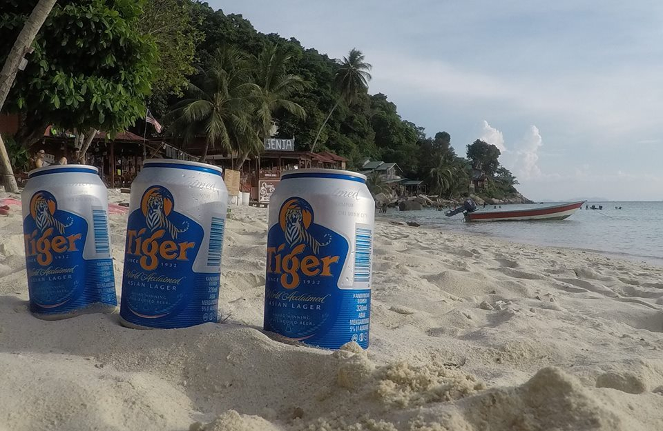

Por Gonzalo Volpe Gómez
¿Qué tal si les digo que el precio de realizar el buceo más económico del mundo es pasarse unos días en una isla salvaje? Aún me sigo preguntando como llegamos a este lugar y eso es lo lindo de saber que siempre van a existir lugares increíbles de los que nunca escuchamos hablar. Lo cierto es que teníamos como destino obligatorio Kuala Lumpur (capital malaya) y luego de buscar y buscar en blogs llegamos a las playas de Perhentian, donde vive una civilización que edificó sus casas precariamente sobre un paraíso de selva malaya y donde se encuentra el lugar más barato del mundo para realizar el Curso Open Water Dive de PADI
Lo de salvaje no es broma, hemos visto una cantidad de animales que jamás imaginamos ver conviviendo a todo momento con nosotros. La cruda realidad es que a pesar de todo esto, no es una isla fácil de visitar, principalmente porque la gente local trabaja con turismo local y el extranjero a veces no es bien recibido. Pero siempre que seamos respetuosos y entendamos como vive la gente de ahí, no vamos a tener ningún problema.
Nosotros buscábamos una combinación entre fiesta y buenas playas con el agregado de encontrar un lugar exótico que no este dentro de las típicas rutas de turismo. Lo cierto es que las Islas Perhentian lo tienen todo.
Lo que tienen que saber es que son dos Islas y cada una es muy diferente entre si, "Pulau Perhentian Besar" es la más grande donde hay un entorno familiar y de parejas, "Pulau Perhentian Kecil" es la isla más pequeña, un tanto más salvaje y la que tiene fiesta en la noche. Nosotros decidimos ir a la isla pequeña y de fiesta.
Playa Coral Bay, Perhentian Island Kecil.
Las Islas Perhentian no tienen aeropuerto propio, por lo tanto, solo podemos llegar en embarcación desde el puerto Kuala Besut. Generalmente las personas suelen ir desde Kuala Lumpur, capital malaya y principal lugar de entrada al país. Desde allí debemos tomar un avión hacia Kota Bharu el cual dura solamente una hora y su precio es de 20 dólares aproximadamente (en moneda malaya son 86 ringgits) ¡Si, por 20 dólares te suben a un avión! Para encontrar el vuelo más barato en este recorrido podés realizar una búsqueda en Skyscanner o también consultar directamente en las webs de las lowcost AirAsia y Myairline Una vez que desembarcamos podemos tomar un taxi o un minibús que nos lleva hacia el puerto de Kuala Besut, el trayecto también dura 1hs también y en minibús cuesta alrededor de 6 dólares por persona (26 ringgits). Por último, tomamos el barco desde el puerto hacia las islas indicando a que isla queremos ir por unos 9 dólares (39 ringgits). Para volver es de la misma manera a la inversa solo que hay 3 horarios en los que salen los barcos, a las 8:00hs - 12:00hs - 16:00hs.
Me gusta ser siempre sincero con las recomendaciones así que es necesario que sepan que apenas llegamos a la Isla, comenzaron los problemas, este destino todavía esta en pleno desarrollo y la infraestructura no es apta para la cantidad de gente que lo visita. Teníamos una reserva en el Ombak para 3 personas y al llegar, luego de hacernos pagar con tarjeta de crédito, la encargada nos dice que por un problema del sistema el hotel estaba colapsado y nuestra habitación reservada. Nos ofrecieron cambiarnos de hotel sin pagar más dinero, sin embargo, estábamos molestos porque sabíamos que el Ombak era uno de los mejores hoteles de allí.
Nos llevaron a un bungalow enfrente al mar, y aquí dentro vivimos uno de los momentos más desesperantes y bizarros de nuestras vidas. Al abrir la puerta de entrada al bungalow había agujeros por todos lados, en el piso, en las paredes, además de un olor nauseabundo, y no solo eso, la ducha estaba rota y sucia y al querer cerrar la puerta del baño nos la quedamos en la mano. Sin embargo, eso fue lo de menos, lo más inquietante fue el fatídico momento que quisimos abrir el placard muy despacito y nos encontramos literalmente con un lagarto y no, no es broma, esto sucedió realmente jajaja En la isla viven una especie llamada "Komodo Dragon" que son parientes de los lagartos y a uno de ellos se le había ocurrido dormir en nuestro placard ¡Lo típico que sucede en todos los viajes!
Luego del enojo, vinieron las risas porque sabíamos que todo esto se estaba convirtiendo en una de esas anécdotas que quedan para toda la vida, 3 argentinos perdidos en una isla llena de malayos con sus lagartos gigantes. Con paciencia, fuimos a pedir el cambio nuevamente de hotel, es difícil debido a que ellos no tienen buen manejo del inglés y en las cuestiones de discusión pareciera que ni siquiera lo saben hablar. Terminamos en el Ombak, una noche en la parte del hostel y las otras dos en una habitación que no era la que habíamos reservado. Lo positivo es que nos devolvieron parte del dinero abonado.
Los precios y horarios están sujetos a constantes cambios. Te recomiendo que los chequees con tu hospedaje o en las páginas oficiales que te indiqué antes de comenzar tu viaje.
Romantic Beach, Perhentian Island Kecil.
Hay dos grandes playas, la "Coral Bay" que es la parte tranquila donde a la noche solo hay algunos lugares de comida y nada de ambiente de fiesta y del otro lado se encuentra la "Long Beach" donde hay muchos más restaurantes y donde a la noche hay música y bares de playa para escuchar reaggea y también algo de reaggeton. Las dos playas están separadas por un camino en medio de la selva que no esta iluminado, por lo tanto, solo les recomiendo que vayan de noche acompañados por un grupo grande y que tengan cuidado con esos lagartos amistosos que les avise, aunque en realidad, solo tienen apariencia de bravos pero no atacan. Otra opción es tomar un taxi boat que bordea toda la isla, pero son caros, y cuanto más tarde sea mayor es el precio de los mismos. Si se hospedan del lado de "Long Beach" no van a tener este problema ya que tienen a pocos pasos los bares.
Lamentablemente el ambiente nocturno es pesado, es decir, los locales bailan con los locales y muchas veces mirar a una persona local con algún tipo de intención de invitar a bailar o de compartir una bebida, puede ser un problema. Nosotros conocimos unas chicas alemanas y nos quedamos la mayoría de la noche bebiendo con ellas y bailando entre nosotros.
En cuanto a los precios, en Ombak cenamos bastante caro, por ejemplo, hamburguesas con dos bebidas por persona a 20 dólares cada uno (86 ringgits). En los kioskos podemos conseguir agua y gaseosa a 2,5 dólares (11 ringgits). Mi recomendación es que compren en el mercado "Amelia" de "Long Beach" donde pude conseguir por 1,5 dólares (6,5 ringgits) un agua, tres bananas y un pan de choclo.
En el día, el atractivo principal son las aguas cristalinas con tonalidades de verdes, las excursiones en barco que nos llevan a distintas playas de la isla y en mi caso, pase todos los días buceando.
Buceo en Islas Perhentian, Malasia.
El hacer buceo es algo que había soñado toda mi vida y de repente tenía enfrente mío un destino salvaje, exótico y donde iba a poder bucear por primera vez, lo cierto es que tenía demasiadas expectativas. El costo del curso entero fue de 250 dólares incluyendo equipo, traslados, material de estudio, examen y licencia. Verdaderamente una ganga. Les recomiendo que se animen a hacer una experiencia así, te hace sentir en otro mundo, en otra realidad y rodeado de animales que jamás imaginamos ver. El curso es pesado, tenés que ver unas 4 horas de video, ir al agua a hacer mil y una practicas tediosas, como por ejemplo, estar en el fondo del mar y que te cierren el tanque de oxígeno ¡Si, una desesperación total! Pero les aseguro que cuando están abajo, una vez que se puedan relajar, todo lo que hicieron habrá valido la pena. Y además, pueden bucear en cualquier lugar del mundo con la licencia de PADI.
SPOILER ALERT: Soy el Gonza del futuro y ya ha pasado un tiempo de que escribí este texto de Perhentian. Este último tiempo realicé varias inmersiones en distintos lugares del mundo, he visto tiburones, rayas, tortugas y miles de especies de peces y lo único que les puedo decir es que: "Bucear es de las actividades más hermosas que hice en mi vida". Al tener la licencia PADI, es muy fácil poder bucear seguro y barato en cualquier lugar, lo más tedioso es el curso inicial, luego, es todo disfrute.
El tercer día hice mi primer inmersión oficial y la verdad que estaba con mucho miedo, y un poco agotado con todo porque sentía que estaba perdiendo días de playas con mis amigos. Sin embargo, al bajar los primeros 10 metros, mi guía toco suavemente mi espalda y al girar mis ojos se abrieron de par en par, no lo podía creer, había 5 tiburones adelante mío. increíblemente la primera vez que me sumergí vi esas criaturas magnificas y lo mas extraño es que no sentí miedo, la naturaleza es sabia y muy armoniosa y creo que eso me dio tranquilidad. En el resto de las sumergidas vi varios tipos de rayas típicas de allá y hasta un pez globo. Sin lugar a dudas, una experiencia que recomiendo.
Con la profe y un compa de buceo.
Desayuno en Ombak.